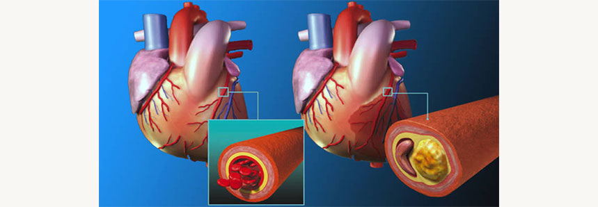

Tout sur le traitement de l'hypertension: entretien avec un cardiologue

L'hypertension artérielle est l'une des maladies cardiovasculaires les plus courantes.
17,5 millionsChaque année 17,5 millions de personnes meurent de maladies cardiovasculaires. |
85%Plus de 85% des décès sont dus à des crises cardiaques et à des accidents vasculaires cérébraux provoqués par l'hypertension. |
95%95% des crises cardiaques prématurées et des accidents vasculaires cérébraux peuvent être évités. |
Pourquoi les vaisseaux s'usent-ils? Comment le cœur réagit-il aux expériences? Comment diagnostiquer les problèmes cardiovasculaires? À cause de quoi l'hypertension apparaît-elle chez les jeunes et comment la traiter? Ceci et bien d'autres choses ont été racontées par un cardiologue avec 30 ans d'expérience, docteur en médecine, le professeur Alexander Dupont.
— Bonjour, Alexandre. Quel est l'âge moyen des personnes souffrant d'hypertension artérielle aujourd'hui?
— Bonjour. Chaque année, l'échelle d'âge de l'incidence diminue. Il y a cinq ans, l'âge moyen pourrait être considéré comme 40-45 ans, aujourd'hui – 35.
— Quelle en est la raison?
—L'hypertension est aujourd'hui appelée «maladie du mode de vie moderne». Cela est dû aux facteurs clés qui contribuent à l'augmentation de la pression: faible activité physique, surpoids, consommation excessive de sel.
— Pourquoi la prévalence de l'hypertension augmente avec l'âge?
— Cela est dû à l'usure et au vieillissement des parois des vaisseaux. Les artères deviennent plus rigides, ce qui aggrave la fonction de relaxation du muscle cardiaque. L'hypertension chronique déforme la paroi mince des vaisseaux cérébraux. En conséquence, il s'amincit complètement et se déchire à un moment donné, ou se déforme et s'épaissit, réduisant ainsi la lumière du vaisseau.
— Quelle est la pression artérielle dangereusement élevée?
—Une pression accrue provoque une hypertrophie du myocarde du ventricule gauche, ce qui entraîne une insuffisance cardiaque. Des plaques athérosclérotiques se forment dans les vaisseaux, à cause desquelles un infarctus du myocarde ou un accident vasculaire cérébral peut se développer. En outre, en raison de l'augmentation de la pression artérielle, tous les organes souffrent: le cerveau, le cœur, les reins et les artères.
— Un jeune accident vasculaire cérébral et une crise cardiaque ne sont pas terribles?
— C'est une erreur. Une crise cardiaque et un accident vasculaire cérébral touchent tout le monde et peuvent survenir à tout âge (bien que, bien sûr, plus l'âge est élevé, plus la probabilité est élevée). En outre, les hommes d'âge moyen (40-50 ans) meurent d'un accident vasculaire cérébral une fois et demie plus souvent que les femmes. Et certains types d'accident vasculaire cérébral se produisent le plus souvent avec de jeunes hommes (25-35 ans) après une forte augmentation de la pression artérielle.

— En plus de l'augmentation de la pression artérielle, il existe d'autres signes qui indiquent le développement de la maladie?
— Il y a cinq signes que les gens n'associent pas à l'hypertension:
- maux de tête après le réveil;
- vertiges;
- tintement dans les oreilles;
- l'apparition de taches lumineuses devant les yeux;
- épistaxis.
— Est-il vrai que le stress provoque une crise (un saut brusque de pression)?
— La crise peut être déclenchée non seulement par le stress, mais aussi par un stress mental excessif, une surdose d'alcool ou de médicaments. Si vous ressentez un mal de tête ou une nausée sévère et que la peau est couverte de taches rouges, appelez une ambulance. Sinon, l'affaire peut se terminer par un gonflement du cerveau ou un accident vasculaire cérébral.
— L'hypertension peut-elle être guérie?
— L'hypertension, comme toute autre maladie, est mieux traitable au stade initial. Il est particulièrement intéressant de s'inquiéter pour les personnes dont les parents ont souffert de maladies cardiaques – dans la plupart des cas, l'hypertension devient une maladie héréditaire. La thérapie moderne comprend des médicaments qui, contrairement aux médicaments périmés, ne perturbent pas le métabolisme des glucides, des lipides et des purines, ne retiennent pas le liquide dans le corps, n'inhibent pas l'activité du système nerveux central.
— Ils sont probablement très chers?
— La plupart des médicaments contre l'hypertension actuels sont en moyenne 80% plus chers que leurs prédécesseurs. En pratique, j'utilise un médicament naturel peu coûteux et très efficace . La chose la plus importante à dire à propos de ce médicament est qu'il doit être pris au cours, et non à vie.

— Comment aide à l'hypertension?
— La composition comprend des B-bloquants et des inhibiteurs naturels qui régulent le travail du cœur et contrôlent que trop de sang n'est pas jeté dans les vaisseaux sanguins. Depuis un apport sanguin excessif en combinaison avec une diminution du tonus provoque une augmentation de la pression.
— Comment fonctionne le médicament?
— Pendant la réception , le patient est assuré contre les fortes fluctuations de pression la nuit et le matin. Le médicament soulage la charge du muscle cardiaque et améliore la circulation sanguine, ce qui permet de réduire la fréquence des accidents vasculaires cérébraux, qui, comme les infarctus du myocarde, se produisent le plus souvent tôt le matin. La pression artérielle la nuit diminue d'environ 10% et le corps réagit en libérant des hormones catécholamines qui aident à maintenir le niveau de pression. non seulement dilue le sang, mais affecte également les vaisseaux obstrués, les nettoyant et les dilatant. La contamination vasculaire par le cholestérol est la principale cause d'hypertension artérielle.

— Le rendez-vous dépend-il de l'âge du patient et s'il a des limites d'admission?
— Le rendez-vous dépend-il de l'âge du patient et s'il a des limites d'admission?
— Pas. Il est utilisé indépendamment de l'âge. Habituellement, la thérapie pour l'hypertension est prescrite individuellement. Avant de commencer le traitement, le patient est examiné pour savoir s'il y a des changements du cœur, des reins et des glandes surrénales. Pour une détermination plus précise, la pression artériel est mesurée sur les deux mains. L'hypertension est souvent accompagnée de troubles du tractus gastro-intestinal, de cardiopathie ischémique, d'athérosclérose. Une différence importante est qu'elle n'affecte pas le travail des organes. Sa seule contre-indication est l'intolérance individuelle aux composants.
— Quand le patient ressent une amélioration avec ?
—Un cours est conçu pour 28 jours. Bien sûr, le résultat dépend du degré d'hypertension, mais le taux moyen d'amélioration du bien-être est de 3-7 jours. La pression diminuera et, avec elle, les migraines, les vertiges, les acouphènes, la météosensibilité et l'insomnie commenceront à passer.
— Autrement dit, non seulement réduit la pression?
— Il fonctionne de manière complexe:
- améliore la circulation sanguine et le tonus;
- nettoie les vaisseaux des plaques de cholestérol;
- améliore l'état du système cardiovasculaire;
- empêche le développement de l'athérosclérose.
— Merci beaucoup pour l'interview. J'ai une Dernière question: Où puis-je acheter ?
— Merci pour l'invitation. Je conseille à mes patients d'acheter sur le site web du fabricant. Cela vous protégera de l'achat de faux et vous donnera une chance d'obtenir le médicament à un prix avantageux.
Commentaires

Alexandre
04.11.20
Ma mère baisse toujours la pression d'urgence, mais pour maintenir le travail du cœur, elle ne boit rien. J'espère que votre interview la convaincra.

Marie Dupont
05.11.20
Avec la pression, les blagues sont mauvaises. Il est donc préférable de ne pas l'abattre, mais de le traiter.

Frédéric
06.11.20
J'ai eu des cas. Je ne pouvais pas travailler normalement et vivre normalement. J'ai bu des comprimés de pression sur une base constante, des problèmes de foie ont commencé. Le médecin a prescrit un naturel . Je les ai bu un mois et crises passé, comme l'était pas. La pression s'est normalisée (il y avait 160-170 à 95-100), et maintenant 130-120 à 80-85 est stable, sans prendre de comprimés de soutien. Je me sens tout simplement merveilleux, la fatigue et la rupture éternelle ont disparu.

Sandrine
07.11.20
Merci pour l'excellent article! Il sera utile pour tous les hypertendus de lire et d'apprendre quelque chose de nouveau en termes de traitement.

Lola Thomas
08.11.20
J'ai aussi une pression artérielle élevée, il faut essayer. Je veux l'abattre une fois pour toutes!
Oscar Dubois
09.11.20
Je n'ai pas réussi à me débarrasser de l'hypertension une fois pour toutes, mais j'ai réussi à stabiliser la pression grâce à un traitement correctement choisi. Quel est le grand mérite de mon docteur. Elle m'a pris un médicament qui abaisse la tension artérielle et nettoie les vaisseaux – . Je l'ai pris 2 fois par jour pour un comprimé. Ça fait six mois que la pression est normale, je me sens bien. Tout est bon.

Monique
10.11.20
C'est exactement ce que je cherchais depuis si longtemps! Merci.
Gilles Paulier
11.11.20
Il est nécessaire d'acheter une telle boisson à ma mère, sinon elle boit ces pilules tout le temps, et c'est un autre poison.

Jean
12.11.20
Je souffre d'hypertension depuis plus de 40 ans! Les comprimés maintiennent plus et moins de pression, et si vous ne buvez pas, alors vous pouvez bientôt vous rassembler.
Diane
13.11.20
Cela fait 20 ans que je suis chez un thérapeute souffrant d'hypertension. Maintenant, j'ai 58 ans pour qu'il soit clair quand j'ai gagné cette hypertension. Constamment pris diverses pilules pour maintenir la pression dans le «cadre». Cela a aidé, mais si vous ne buvez pas une pilule le matin, la pression augmente le soir. J'ai été conseillé par des amis d'un bon médecin, qui m'a prescrit . Et ma vie a changé pour le mieux! La pression a été normalisée, la gravité de la douleur et le bruit dans la tête ont disparu, ont cessé de tirer dans la poitrine. J'ai même bien dormi, même si j'ai souffert d'insomnie toute ma vie. Vous savez, je n'ai jamais cru en toutes sortes de méthodes et de techniques médicales, à l'exception de la traditionnelle. Mais j'ai commencé le traitement avec le médicament et j'ai réalisé que j'avais tort et que j'étais assise trop longtemps sur des médicaments trop sérieux. Si vous commencez immédiatement le traitement correctement, il n'y aurait pas de problèmes rénaux. Mais surtout, il n'y a pas de problème de pression en ce moment. Je suis très contente.
Voulez-vous écrire un message?
Construire un masque transparent à partir d'une bouteille de soda
Designer industriel Marc Sanders nous montre son nouveau design amélioré.